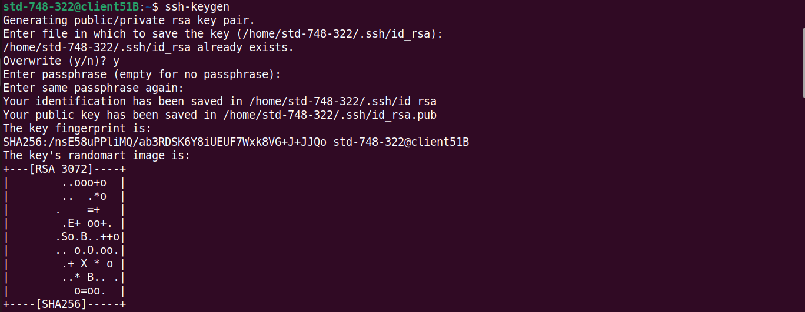
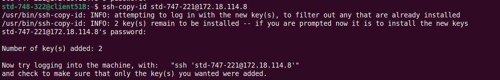
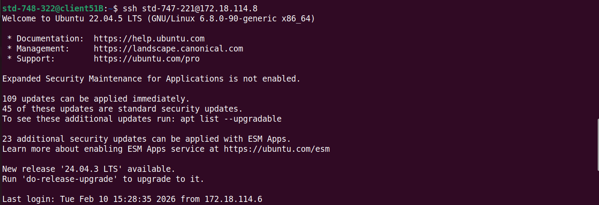
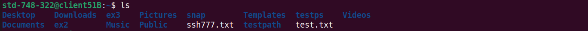

Presented by Group 7
Extended Secure Shell (SSH)
Run Remote Commands
00 | Extended Secure Shell (SSH)
การใช้งาน SSH ที่ถูกพัฒนาให้ปลอดภัยและสะดวกขึ้น
โดยเน้นการเชื่อมต่อแบบเข้ารหัส และสามารถควบคุมระบบระยะไกลได้อย่างมีประสิทธิภาพ
-
ปลอดภัยมากขึ้นด้วย Key Authentication
จากเดิมที่ต้องพิมพ์ IP และรหัสผ่าน Extended SSH จะเน้นใช้ “กุญแจดิจิทัล” (Public / Private Key) เพื่อเพิ่มความปลอดภัยในการเข้าถึงระบบ
-
สร้างอุโมงค์ลับ (SSH Tunneling)
เปรียบเหมือนการสร้างทางเดินส่วนตัวสำหรับส่งข้อมูลผ่านเครือข่าย ทำให้ข้อมูลถูกซ่อนและป้องกันการดักฟังจากบุคคลภายนอก
-
ควบคุมหลายเครื่องได้ในครั้งเดียว
สามารถสั่งงานหลาย Server พร้อมกันได้ ลดความยุ่งยากจากการ Remote เข้าใช้งานทีละเครื่อง เหมาะสำหรับการบริหารจัดการระบบขนาดใหญ่
01 | ขอบเขตการศึกษา
- ศึกษาหลักการทำงานพื้นฐานของ Secure Shell (SSH) ในรูปแบบ Client–Server
- ศึกษาการสั่งรันคำสั่งข้ามเครื่อง (Run Remote Commands)
- ศึกษากลไกการยืนยันตัวตนด้วย Public / Private Key Authentication
- ศึกษาโครงสร้างและการทำงานของ SSH Protocol ในระดับแนวคิด
- ทดลองใช้งาน SSH บนระบบปฏิบัติการ Linux
02 | หลักการทำงานแบบ Client–Server
- Client ส่งคำขอเชื่อมต่อไปยัง Server
- Server ตอบรับและสร้างการเชื่อมต่อแบบเข้ารหัส
- มีการตรวจสอบตัวตนก่อนเริ่มใช้งาน
- เมื่อยืนยันสำเร็จจึงสามารถสั่งงานได้
03 | โครงสร้าง SSH Protocol
การทำงานของ SSH ถูกแบ่งออกเป็น 3 Layer เพื่อให้การเชื่อมต่อมีความปลอดภัย โดยจะทำงานเรียงลำดับจากการเข้ารหัส ไปจนถึงการใช้งานจริง
-
Transport Layer
ทำหน้าที่สร้างการเชื่อมต่อและเข้ารหัสข้อมูล เพื่อป้องกันการดักฟังระหว่าง Client และ Server
-
Authentication Layer
ตรวจสอบตัวตนของผู้ใช้งาน เช่น การใช้รหัสผ่าน หรือ Public / Private Key
-
Connection Layer
จัดการการใช้งานหลังยืนยันตัวตน เช่น การเปิด Shell หรือการสั่งรันคำสั่งระยะไกล
04 | Run Remote Commands
เป็นการสั่งรันคำสั่งจากเครื่อง Client ไปยังเครื่อง Server โดยไม่จำเป็นต้องเข้าสู่การใช้งานแบบ Interactive Shell
-
ไม่ต้องเข้า Interactive Shell
สามารถส่งคำสั่งให้ Server ทำงานและรับผลลัพธ์กลับมาได้ทันที
-
เหมาะสำหรับ Automation และ Monitoring
ใช้ร่วมกับ Script เพื่อทำงานอัตโนมัติ และตรวจสอบสถานะระบบจากระยะไกล เช่น CPU, Memory และ Disk
05 | Public / Private Key Authentication
เป็นวิธีการยืนยันตัวตนของผู้ใช้งาน โดยไม่ต้องใช้รหัสผ่าน แต่ใช้กุญแจคู่เพื่อเพิ่มความปลอดภัยในการเชื่อมต่อผ่าน SSH
| หัวข้อ | Public Key | Private Key |
|---|---|---|
| ที่จัดเก็บ | จัดเก็บไว้บนเครื่อง Server | จัดเก็บไว้บนเครื่อง Client |
| การเปิดเผย | สามารถเปิดเผยได้ | ต้องเก็บเป็นความลับ ไม่ควรเปิดเผย |
| หน้าที่การใช้งาน | ใช้สำหรับตรวจสอบตัวตน หรือใช้ในการเข้ารหัสข้อมูล | ใช้สำหรับถอดรหัสข้อมูล หรือใช้ในการลงลายเซ็นดิจิทัล |
| ความปลอดภัย | ไม่ก่อให้เกิดความเสี่ยงด้านความปลอดภัย | ก่อให้เกิดความเสี่ยงด้านความปลอดภัยในระดับสูง |
06.1 | ทดลองบนระบบ Linux
Server : ติดตั้ง SSH Server
ติดตั้งและเปิดใช้งาน OpenSSH Server

ติดตั้ง OpenSSH และเปิด SSH Service เพื่อให้เครื่อง Server พร้อมรับการเชื่อมต่อ
sudo systemctl start ssh
06.2 | ทดลองบนระบบ Linux
Server : ตรวจสอบ IP Address
ตรวจสอบ IP Address ของเครื่อง Server
ใช้คำสั่ง ifconfig เพื่อดู IP Address ของเครื่อง Server (ตัวอย่างคือ 172.18.114.197)
06.3 | ทดลองบนระบบ Linux
Client : สร้าง SSH Key
สร้าง Public / Private Key สำหรับการยืนยันตัวตน

คำสั่ง ssh-keygen จะสร้างคู่กุญแจเข้ารหัสเพื่อใช้สำหรับ SSH Authentication
06.4 | ทดลองบนระบบ Linux
Client : ส่ง Public Key ไปยัง Server
คัดลอก Public Key ไปยัง Server
เพื่อให้สามารถเชื่อมต่อ SSH ได้โดยไม่ต้องใช้รหัสผ่าน
06.5 | ทดลองบนระบบ Linux
Client : เชื่อมต่อ SSH
เชื่อมต่อเข้าใช้งาน Server ผ่าน SSH
เมื่อเชื่อมต่อสำเร็จจะสามารถสั่งงาน Server ได้ทันที
06.6 | ทดลองบนระบบ Linux
Client : ทดลองรันคำสั่งผ่าน SSH
ตัวอย่างการสร้างโฟลเดอร์และไฟล์จากระยะไกล
cd testdata
touch narak.txt
06.7 | ทดลองบนระบบ Linux
Server: ตรวจสอบผลลัพธ์
ตรวจสอบโฟลเดอร์และไฟล์ที่สร้างขึ้น
จากการทดลอง เมื่อใช้คำสั่ง ls เพื่อตรวจสอบข้อมูลในระบบไฟล์ พบว่าโฟลเดอร์ testdata ถูกสร้างขึ้นเรียบร้อย และพบไฟล์ narak.txt แสดงให้เห็นว่าการสั่งงานผ่าน SSH ประสบผลสำเร็จ
รายชื่อสมาชิก
| ลำดับ | ชื่อ - สกุล | รหัสนักศึกษา | หน้าที่ |
|---|---|---|---|
| 1 | นางสาวซาวาตี บือนีมะเร๊ะ | 6620310006 | ทดลองและปฏิบัติการบนระบบ Linux |
| 2 | นางสาวร็อยยาน สะอะ | 6620310018 | ศึกษาข้อมูลและเรียบเรียงเนื้อหาลงสไลด์ |
| 3 | นางสาวรูสนี มะแซ | 6620310020 | ค้นคว้าและศึกษาข้อมูลเกี่ยวกับ SSH |
| 4 | นางสาวอาซียะห์ มะแห | 6620310028 | รวบรวมเนื้อหาและข้อมูลที่เกี่ยวข้องกับหัวข้อ |
| 5 | นางสาวนุสมี เวาะผา | 6620310139 | ทดลองและตรวจสอบการทำงานของระบบ |